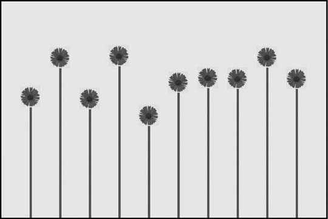
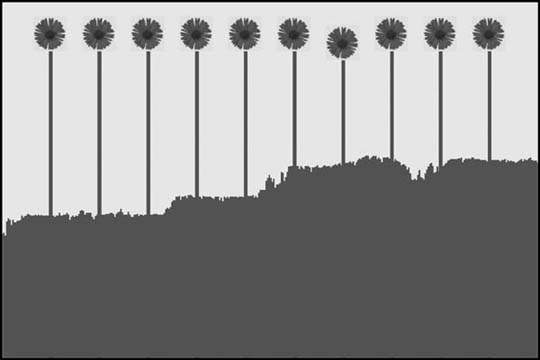

|
|
< Day Day Up > |
|
15.2 Evolving Plant LifeThis first example shows how to apply a genetic algorithm to successive generations of flowers as they attempt to thrive in their environment. We define a series of hypothetical environmental conditions in which the flowers must grow. Each flower then contains genetic information that indicates its ideal growing environment. Flowers whose ideal growing environments most closely match the actual conditions grow the tallest. The tallest flowers will be considered the most fit and have their genetic information passed on to successive generations. This should result in a general increase in flower height as generations progress. 15.2.5 Encoding the Flower DataWe start by defining the six hypothetical environmental conditions, which we consider to be the actual conditions of the flower world. These are shown in Example 15-1. Example 15-1. Encoding
Class ai_World
{
public:
int currentTemperature;
int currentWater;
int currentSunlight;
int currentNutrient;
int currentBeneficialInsect;
int currentHarmfulInsect;
ai_World();
~ai_World();
};
As Example 15-1 shows, the six conditions are currentTemperature, currentWater, currentSunlight, currentNutrient, currentBeneficialInsect, and currentHarmfulInsect. Encoding is the process of storing the chromosomes in a structure that can be stored in a computer. This, of course, can be any type of structure of the programmer's choosing. Example 15-2 shows the structure that we use in the flower evolution example. Example 15-2. Conditions
#define kMaxFlowers 11
Class ai_World
{
public:
int temperature[kMaxFlowers];
int water[kMaxFlowers];
int sunlight[kMaxFlowers];
int nutrient[kMaxFlowers];
int beneficialInsect[kMaxFlowers];
int harmfulInsect[kMaxFlowers];
int currentTemperature;
int currentWater;
int currentSunlight;
int currentNutrient;
int currentBeneficialInsect;
int currentHarmfulInsect;
ai_World();
~ai_World();
};
As Example 15-2 shows, we use six arrays to represent the six environmental conditions. These include temperature, water, sunlight, nutrient, beneficialInsect, and harmfulInsect. Each contains a chromosome that indicates the ideal conditions for each flower. 15.2.6 First Flower GenerationAs with all genetic algorithms, first we must populate the world with the initial generation. If we consider the genetic process as searching for the optimum solution to a problem, the first generation consists of a group of our best guesses at a solution. We also need to ensure that we have a diverse set of possible solutions. Example 15-3 shows the creation of the first generation. Example 15-3. First flower generation
void ai_World::Encode(void)
{
int i;
for (i=1;i<kMaxFlowers;i++)
{
temperature[i]=Rnd(1,75);
water[i]=Rnd(1,75);
sunlight[i]=Rnd(1,75);
nutrient[i]=Rnd(1,75);
beneficialInsect[i]=Rnd(1,75);
harmfulInsect[i]=Rnd(1,75);
}
currentTemperature=Rnd(1,75);
currentWater=Rnd(1,75);
currentSunlight=Rnd(1,75);
currentNutrient=Rnd(1,75);
currentBeneficialInsect=Rnd(1,75);
currentHarmfulInsect=Rnd(1,75);
}
As Example 15-3 shows, we begin by randomly encoding the chromosomes of the flowers. We use six arrays to indicate the ideal growing conditions for each member of the flower population. The arrays include temperature, water, sunlight, nutrient, beneficialInsect, and harmfulInsect. Each array contains a value from 1 to 75. This range was tuned for this example. A number smaller than 75 makes evolution occur more quickly. However, if evolution takes place over just a few generations, there won't be much to observe. Likewise, using a higher number slows the evolution process, requiring more generations before an optimum solution is found. The flowers grow best when the actual conditions closely match the ideal growing conditions encoded in their chromosomes. We use a for loop to set the values randomly in each array. This will ensure a diverse population of flowers. Once the for loop has executed, we assign the values of the current conditions; these include currentTemperature, currentWater, currentSunlight, currentNutrient, currentBeneficialInsect, and currentHarmfulInsect. 15.2.7 Ranking Flower FitnessFor the purpose of this genetic simulation, we assume the fittest flowers are those that are most capable of flourishing in the current environmental conditions. The chromosomes in each individual flower are encoded with their own ideal growing conditions. We essentially measure how close each flower's ideal conditions are to the actual conditions. Those that are closest grow the tallest. This is shown in Figure 15-8. Figure 15-8. Initial flower populationFigure 15-8 shows the initial deviation among the flower population. Those that are best suited to grow in the current conditions are the tallest. As the figure shows, some are noticeably better at flourishing in their environment. Next we look at how we actually determine the fittest members of the population. This is shown in Example 15-4. Example 15-4. Flower fitness function
int ai_World::Fitness(int flower)
{
int theFitness=0;
theFitness = fabs(temperature[flower] - currentTemperature);
theFitness = theFitness+fabs(water[flower] - currentWater);
theFitness = theFitness+fabs(sunlight[flower] -
currentSunlight);
theFitness = theFitness+fabs(nutrient[flower] -
currentNutrient);
theFitness = theFitness+fabs(beneficialInsect[flower] -
currentBeneficialInsect);
theFitness = theFitness+fabs(harmfulInsect[flower] -
currentHarmfulInsect);
return (theFitness);
}
As Example 15-4 shows, we use the Fitness function to calculate the total deviation between the current environmental conditions and the ideal conditions needed for each individual flower to flourish. We begin by initializing the variable theFitness to 0. We then increase the value in theFitness by the absolute value of the difference between each flower's ideal condition and the current condition. This gives us a sum of the total deviation of all the growing conditions. 15.2.8 Evolving the FlowersThe ultimate goal of any genetic algorithm is to produce offspring that are more fit than their parents. Our first step was to create the initial population and then determine the fitness of each individual. The fitness ranking process enabled us to select the best members of the population. The final step is the actual creation of the new generation using the traits of the most successful members of the previous generation. Besides crossing over the traits of the fittest flowers, we also introduce random mutations. The Evolve function in Example 15-5 shows both the crossover step and the introduction of random mutations. Example 15-5. Flower evolution
void ai_World::Evolve(void)
{
int fitTemperature[kMaxFlowers];
int fitWater[kMaxFlowers];
int fitSunlight[kMaxFlowers];
int fitNutrient[kMaxFlowers];
int fitBeneficialInsect[kMaxFlowers];
int fitHarmfulInsect[kMaxFlowers];
int fitness[kMaxFlowers];
int i;
int leastFit=0;
int leastFitIndex;
for (i=1;i<kMaxFlowers;i++)
if (Fitness(i)>leastFit)
{
leastFit=Fitness(i);
leastFitIndex=i;
}
temperature[leastFitIndex]=temperature[Rnd(1,10)];
water[leastFitIndex]=water[Rnd(1,10)];
sunlight[leastFitIndex]=sunlight[Rnd(1,10)];
nutrient[leastFitIndex]=nutrient[Rnd(1,10)];
beneficialInsect[leastFitIndex]=beneficialInsect[Rnd(1,10)];
harmfulInsect[leastFitIndex]=harmfulInsect[Rnd(1,10)];
for (i=1;i<kMaxFlowers;i++)
{
fitTemperature[i]=temperature[Rnd(1,10)];
fitWater[i]=water[Rnd(1,10)];
fitSunlight[i]=sunlight[Rnd(1,10)];
fitNutrient[i]=nutrient[Rnd(1,10)];
fitBeneficialInsect[i]=beneficialInsect[Rnd(1,10)];
fitHarmfulInsect[i]=harmfulInsect[Rnd(1,10)];
}
for (i=1;i<kMaxFlowers;i++)
{
temperature[i]=fitTemperature[i];
water[i]=fitWater[i];
sunlight[i]=fitSunlight[i];
nutrient[i]=fitNutrient[i];
beneficialInsect[i]=fitBeneficialInsect[i];
harmfulInsect[i]=fitHarmfulInsect[i];
}
for (i=1;i<kMaxFlowers;i++)
{
if (tb_Rnd(1,100)==1)
temperature[i]=Rnd(1,75);
if (tb_Rnd(1,100)==1)
water[i]=Rnd(1,75);
if (tb_Rnd(1,100)==1)
sunlight[i]=Rnd(1,75);
if (tb_Rnd(1,100)==1)
nutrient[i]=Rnd(1,75);
if (tb_Rnd(1,100)==1)
beneficialInsect[i]=Rnd(1,75);
if (tb_Rnd(1,100)==1)
harmfulInsect[i]=Rnd(1,75);
}
}
You can implement a crossover function in many ways. Game developers are not burdened by the limits of the biological world. In the biological world the crossover would involve the chromosomes to two fit parents. In game development, crossover can involve any number of parents. In the case of this flower evolution example, we are going to identify the least fit member of the population. The first for loop calls the Fitness function to identify the least fit member of the population. We then reassign the traits of the least fit flower to those of random members of the flower population. The next two for loop blocks randomly mix up the traits of the flower population. Essentially we already reassigned the traits of the least fit flower, so at this point the flower population as a whole should be an improvement over the previous generation. Unfortunately, no individual trait can be any better than it was in the previous generation because the same traits were passed on. We now need a way to try to surpass the previous generation. We accomplish this through random mutations. In the last for loop block, each trait of each flower has a 1% chance of randomly mutating. If the mutation is a success, the trait probably will be passed on to the next generation. If the mutation results in a flower being the least fit member of the population, it will be dropped. Figure 15-9 shows the end result of multiple generations. Figure 15-9. Resulting flower populationAs Figure 15-9 shows, all the flowers are at or near their maximum heights. The area beneath the flowers also graphs the fitness of each generation. As the graph shows, there is a general upward trend in the fitness of each generation. However, not every generation was an improvement over the one before it. The graph does show some downturns. This is due to the random mutations introduced into the population. However, as the graph shows, the genetic process eventually will find the best solution to the problem. |
|
|
< Day Day Up > |
|